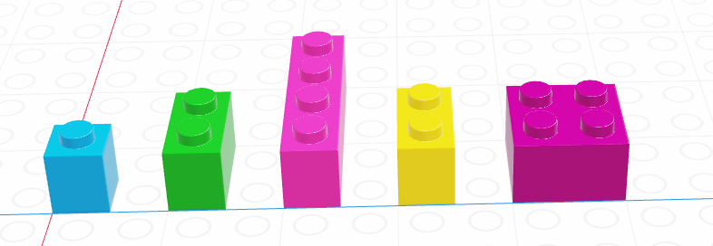
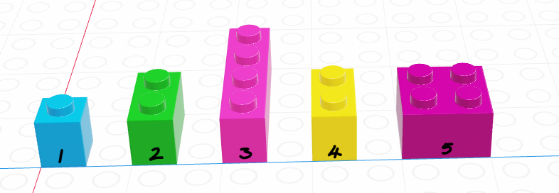
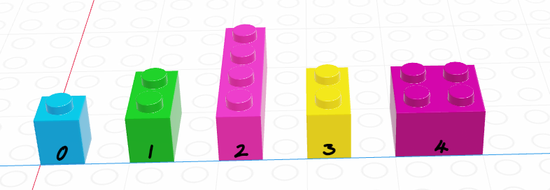

x <- c(TRUE, FALSE, TRUE, FALSE)
y <- c(TRUE, TRUE, FALSE, FALSE)
x & y # AND[1] TRUE FALSE FALSE FALSEx | y # OR[1] TRUE TRUE TRUE FALSE!x & y # NOT X AND Y[1] FALSE TRUE FALSE FALSEx & !y # X AND NOT Y[1] FALSE FALSE TRUE FALSEThis chapter introduces some of the most important tools for working with data: vectors, matrices, loops, and if statements. It would be nice to gradually introduce each one of these topics separately, but they tend to go together, especially when you’re talking about programming in the context of data processing.
Before we start talking about data structures and control structures, though, we’re going to take a minute to review some concepts from mathematical logic. This will be useful for both data structures and control structures, so stick with me for a few minutes.
We can combine logical statements using and, or, and not.
In R, we use ! to symbolize NOT, in Python, we use ~ for vector-wise negation (NOT).
Order of operations dictates that NOT is applied before other operations. So NOT X AND Y is read as (NOT X) AND (Y). You must use parentheses to change the way this is interpreted.
x <- c(TRUE, FALSE, TRUE, FALSE)
y <- c(TRUE, TRUE, FALSE, FALSE)
x & y # AND[1] TRUE FALSE FALSE FALSEx | y # OR[1] TRUE TRUE TRUE FALSE!x & y # NOT X AND Y[1] FALSE TRUE FALSE FALSEx & !y # X AND NOT Y[1] FALSE FALSE TRUE FALSEimport numpy as np
x = np.array([True, False, True, False])
y = np.array([True, True, False, False])
x & yarray([ True, False, False, False])x | yarray([ True, True, True, False])~x & yarray([False, True, False, False])x & ~yarray([False, False, True, False])De Morgan’s Laws are a set of rules for how to combine logical statements. You can represent them in a number of ways:
 Suppose that we set the convention that
Suppose that we set the convention that  .
.


In the previous chapter, we discussed 4 different data types: strings/characters, numeric/double/floats, integers, and logical/booleans. As you might imagine, things are about to get more complicated.
Data structures are more complicated arrangements of information.
| Homogeneous | Heterogeneous | |
|---|---|---|
| 1D | vector | list |
| 2D | matrix | data frame |
| N-D | array |
A list is a one-dimensional column of heterogeneous data - the things stored in a list can be of different types.

x <- list("a", 3, FALSE)
x[[1]]
[1] "a"
[[2]]
[1] 3
[[3]]
[1] FALSEx = ["a", 3, False]
x['a', 3, False]The most important thing to know about lists, for the moment, is how to pull things out of the list. We call that process indexing.
Every element in a list has an index (a location, indicated by an integer position)1.
In R, we count from 1.

x <- list("a", 3, FALSE)
x[1] # This returns a list[[1]]
[1] "a"x[1:2] # This returns multiple elements in the list[[1]]
[1] "a"
[[2]]
[1] 3x[[1]] # This returns the item[1] "a"x[[1:2]] # This doesn't work - you can only use [[]] with a single indexError in x[[1:2]]: subscript out of boundsIn R, list indexing with [] will return a list with the specified elements.
To actually retrieve the item in the list, use [[]]. The only downside to [[]] is that you can only access one thing at a time.
In Python, we count from 0.

x = ["a", 3, False]
x[0]'a'x[1]3x[0:2]['a', 3]In Python, we can use single brackets to get an object or a list back out, but we have to know how slices work. Essentially, in Python, 0:2 indicates that we want objects 0 and 1, but want to stop at 2 (not including 2). If you use a slice, Python will return a list; if you use a single index, python just returns the value in that location in the list.
We’ll talk more about indexing as it relates to vectors, but indexing is a general concept that applies to just about any multi-value object.
A vector is a one-dimensional column of homogeneous data. Homogeneous means that every element in a vector has the same data type.
We can have vectors of any data type and length we want: 
Each element in a vector has an index - an integer telling you what the item’s position within the vector is. I’m going to demonstrate indices with the string vector
| R | Python |
|---|---|
| 1-indexed language | 0-indexed language |
| Count elements as 1, 2, 3, 4, …, N | Count elements as 0, 1, 2, 3, , …, N-1 |
 |
 |
In R, we create vectors with the c() function, which stands for “concatenate” - basically, we stick a bunch of objects into a row.
digits_pi <- c(3, 1, 4, 1, 5, 9, 2, 6, 5, 3, 5)
# Access individual entries
digits_pi[1][1] 3digits_pi[2][1] 1digits_pi[3][1] 4# R is 1-indexed - a list of 11 things goes from 1 to 11
digits_pi[0]numeric(0)digits_pi[11][1] 5# Print out the vector
digits_pi [1] 3 1 4 1 5 9 2 6 5 3 5In python, we create vectors using the array function in the numpy module. To add a python module, we use the syntax import <name> as <nickname>. Many modules have conventional (and very short) nicknames - for numpy, we will use np as the nickname. Any functions we reference in the numpy module will then be called using np.fun_name() so that python knows where to find them.2
import numpy as np
digits_list = [3,1,4,1,5,9,2,6,5,3,5]
digits_pi = np.array(digits_list)
# Access individual entries
digits_pi[0]3digits_pi[1]1digits_pi[2]
# Python is 0 indexed - a list of 11 things goes from 0 to 104digits_pi[0]3digits_pi[11]
# multiplication works on the whole vector at onceError in py_call_impl(callable, dots$args, dots$keywords): IndexError: index 11 is out of bounds for axis 0 with size 11
Detailed traceback:
File "<string>", line 1, in <module>digits_pi * 2
# Print out the vectorarray([ 6, 2, 8, 2, 10, 18, 4, 12, 10, 6, 10])print(digits_pi)[3 1 4 1 5 9 2 6 5 3 5]Python has multiple things that look like vectors, including the pandas library’s Series structure. A Series is a one-dimensional array-like object containing a sequence of values and an associated array of labels (called its index).
import pandas as pd
digits_pi = pd.Series([3,1,4,1,5,9,2,6,5,3,5])
# Access individual entries
digits_pi[0]3digits_pi[1]1digits_pi[2]
# Python is 0 indexed - a list of 11 things goes from 0 to 104digits_pi[0]3digits_pi[11]
# logical indexing works here tooError in py_call_impl(callable, dots$args, dots$keywords): KeyError: 11
Detailed traceback:
File "<string>", line 1, in <module>
File "/__w/Stat151/Stat151/renv/python/virtualenvs/renv-python-3.8/lib/python3.8/site-packages/pandas/core/series.py", line 958, in __getitem__
return self._get_value(key)
File "/__w/Stat151/Stat151/renv/python/virtualenvs/renv-python-3.8/lib/python3.8/site-packages/pandas/core/series.py", line 1069, in _get_value
loc = self.index.get_loc(label)
File "/__w/Stat151/Stat151/renv/python/virtualenvs/renv-python-3.8/lib/python3.8/site-packages/pandas/core/indexes/range.py", line 387, in get_loc
raise KeyError(key) from errdigits_pi[digits_pi > 3]
# simple multiplication works in a vectorized manner
# that is, the whole vector is multiplied at once2 4
4 5
5 9
7 6
8 5
10 5
dtype: int64digits_pi * 2
# Print out the series0 6
1 2
2 8
3 2
4 10
5 18
6 4
7 12
8 10
9 6
10 10
dtype: int64print(digits_pi)0 3
1 1
2 4
3 1
4 5
5 9
6 2
7 6
8 5
9 3
10 5
dtype: int64The Series object has a list of labels in the first printed column, and a list of values in the second. If we want, we can specify the labels manually to use as e.g. plot labels later:
import pandas as pd
weekdays = pd.Series(['Sunday', 'Monday', 'Tuesday', 'Wednesday', 'Thursday', 'Friday', 'Saturday'], index = ['S', 'M', 'T', 'W', 'R', 'F', 'Sat'])
# access individual objs
weekdays[0]'Sunday'weekdays[1]'Monday'weekdays['S']'Sunday'weekdays['Sat']
# access the index'Saturday'weekdays.indexIndex(['S', 'M', 'T', 'W', 'R', 'F', 'Sat'], dtype='object')weekdays.index[6] = 'Z' # you can't assign things to the index to change itError in py_call_impl(callable, dots$args, dots$keywords): TypeError: Index does not support mutable operations
Detailed traceback:
File "<string>", line 1, in <module>
File "/__w/Stat151/Stat151/renv/python/virtualenvs/renv-python-3.8/lib/python3.8/site-packages/pandas/core/indexes/base.py", line 5021, in __setitem__
raise TypeError("Index does not support mutable operations")weekdaysS Sunday
M Monday
T Tuesday
W Wednesday
R Thursday
F Friday
Sat Saturday
dtype: objectWe can pull out items in a vector by indexing, but we can also replace specific things as well:
favorite_cats <- c("Grumpy", "Garfield", "Jorts", "Jean")
favorite_cats[1] "Grumpy" "Garfield" "Jorts" "Jean" favorite_cats[2] <- "Nyan Cat"
favorite_cats[1] "Grumpy" "Nyan Cat" "Jorts" "Jean" favorite_cats = ["Grumpy", "Garfield", "Jorts", "Jean"]
favorite_cats['Grumpy', 'Garfield', 'Jorts', 'Jean']favorite_cats[1] = "Nyan Cat"
favorite_cats['Grumpy', 'Nyan Cat', 'Jorts', 'Jean']If you’re curious about any of these cats, see the footnotes3.
As you might imagine, we can create vectors of all sorts of different data types. One particularly useful trick is to create a logical vector that goes along with a vector of another type to use as a logical index.

If we let the black lego represent “True” and the grey lego represent “False”, we can use the logical vector to pull out all values in the main vector.
| Black = True, Grey = False | Grey = True, Black = False |
|---|---|
 |
 |
Note that for logical indexing to work properly, the logical index must be the same length as the vector we’re indexing. This constraint will return when we talk about data frames, but for now just keep in mind that logical indexing doesn’t make sense when this constraint isn’t true.
# Define a character vector
weekdays <- c("Sunday", "Monday", "Tuesday", "Wednesday", "Thursday", "Friday", "Saturday")
weekend <- c("Sunday", "Saturday")
# Create logical vectors
relax_days <- c(1, 0, 0, 0, 0, 0, 1) # doing this the manual way
relax_days <- weekdays %in% weekend # This creates a logical vector
# with less manual construction
relax_days[1] TRUE FALSE FALSE FALSE FALSE FALSE TRUEschool_days <- !relax_days # FALSE if weekend, TRUE if not
school_days[1] FALSE TRUE TRUE TRUE TRUE TRUE FALSE# Using logical vectors to index the character vector
weekdays[school_days] # print out all school days[1] "Monday" "Tuesday" "Wednesday" "Thursday" "Friday" import numpy as np;
animals = np.array(["Cat", "Dog", "Snake", "Lizard", "Tarantula", "Hamster", "Gerbil", "Otter"])
# Define a logical vector
good_pets = np.array([True, True, False, False, False, True, True, False])
bad_pets = np.invert(good_pets) # Invert the logical vector
# so True -> False and False -> True
animals[good_pets]array(['Cat', 'Dog', 'Hamster', 'Gerbil'], dtype='<U9')animals[bad_pets]array(['Snake', 'Lizard', 'Tarantula', 'Otter'], dtype='<U9')animals[~good_pets] # equivalent to using bad_petsarray(['Snake', 'Lizard', 'Tarantula', 'Otter'], dtype='<U9')As vectors are a collection of things of a single type, what happens if we try to make a vector with differently-typed things?
c(2L, FALSE, 3.1415, "animal") # all converted to strings[1] "2" "FALSE" "3.1415" "animal"c(2L, FALSE, 3.1415) # converted to numerics[1] 2.0000 0.0000 3.1415c(2L, FALSE) # converted to integers[1] 2 0import numpy as np
np.array([2, False, 3.1415, "animal"]) # all converted to stringsarray(['2', 'False', '3.1415', 'animal'], dtype='<U32')np.array([2, False, 3.1415]) # converted to floatsarray([2. , 0. , 3.1415])np.array([2, False]) # converted to integersarray([2, 0])As a reminder, this is an example of implicit type conversion - R and python decide what type to use for you, going with the type that doesn’t lose data but takes up as little space as possible.
Create a vector of the integers from one to 30. Use logical indexing to pick out only the numbers which are multiples of 3.
x <- 1:30
x [ x %% 3 == 0] [1] 3 6 9 12 15 18 21 24 27 30import numpy as np
x = np.array(range(1, 31)) # because python is 0 indexed
x[ x % 3 == 0]array([ 3, 6, 9, 12, 15, 18, 21, 24, 27, 30])Extra challenge: Pick out numbers which are multiples of 2 or 3, but not multiples of 6!
This operation is xor, a.k.a. exclusive or. That is, X or Y, but not X AND Y.
We can write xor as (X OR Y) & !(X AND Y) – or we can use a predefined function: xor() in R, ^ in python.
x <- 1:30
x2 <- x %% 2 == 0 # multiples of 2
x3 <- x %% 3 == 0 # multiples of 3
x2xor3 <- xor(x2, x3)
x2xor3_2 <- (x2 | x3) & !(x2 & x3)
x[x2xor3] [1] 2 3 4 8 9 10 14 15 16 20 21 22 26 27 28x[x2xor3_2] [1] 2 3 4 8 9 10 14 15 16 20 21 22 26 27 28import numpy as np
x = np.array(range(1, 31))
x2 = x % 2 == 0 # multiples of 2
x3 = x % 3 == 0 # multiples of 3
x2xor3 = x2 ^ x3
x[x2xor3]array([ 2, 3, 4, 8, 9, 10, 14, 15, 16, 20, 21, 22, 26, 27, 28])A matrix is the next step after a vector - it’s a set of values arranged in a two-dimensional, rectangular format.

# Minimal matrix in R: take a vector,
# tell R how many rows you want
matrix(1:12, nrow = 3) [,1] [,2] [,3] [,4]
[1,] 1 4 7 10
[2,] 2 5 8 11
[3,] 3 6 9 12matrix(1:12, ncol = 3) # or columns [,1] [,2] [,3]
[1,] 1 5 9
[2,] 2 6 10
[3,] 3 7 11
[4,] 4 8 12# by default, R will fill in column-by-column
# the byrow parameter tells R to go row-by-row
matrix(1:12, nrow = 3, byrow = T) [,1] [,2] [,3] [,4]
[1,] 1 2 3 4
[2,] 5 6 7 8
[3,] 9 10 11 12# We can also easily create square matrices
# with a specific diagonal (this is useful for modeling)
diag(rep(1, times = 4)) [,1] [,2] [,3] [,4]
[1,] 1 0 0 0
[2,] 0 1 0 0
[3,] 0 0 1 0
[4,] 0 0 0 1In python, matrices are just a special case of a class called ndarray - n-dimensional arrays.
import numpy as np
# Minimal ndarray in python by typing in the values in a structured format
np.array([[0, 1, 2],
[3, 4, 5],
[6, 7, 8],
[9, 10, 11]])
# This syntax creates a list of the rows we want in our matrix
# Matrix in python using a data vector and size parametersarray([[ 0, 1, 2],
[ 3, 4, 5],
[ 6, 7, 8],
[ 9, 10, 11]])np.reshape(range(0,12), (3,4))array([[ 0, 1, 2, 3],
[ 4, 5, 6, 7],
[ 8, 9, 10, 11]])np.reshape(range(0,12), (4,3))array([[ 0, 1, 2],
[ 3, 4, 5],
[ 6, 7, 8],
[ 9, 10, 11]])np.reshape(range(0,12), (3,4), order = 'F')array([[ 0, 3, 6, 9],
[ 1, 4, 7, 10],
[ 2, 5, 8, 11]])In python, we create 2-dimensional arrays (aka matrices) either by creating a list of rows to join together or by reshaping a 1-dimensional array. The trick with reshaping the 1-dimensional array is the order argument: ‘F’ stands for “Fortran-like” and ‘C’ stands for “C-like”… so to go by column, you use ‘F’ and to go by row, you use ‘C’. Totally intuitive, right?
This class comes before linear algebra in the required course sequence, so most of the problems we’re going to work on will not require much in the way of matrix or array operations. For now, you need the following:
Both R and python use [row, column] to index matrices. To extract the bottom-left element of a 3x4 matrix in R, we would use [3,1] to get to the third row and first column entry; in python, we would use [2,0] (remember that Python is 0-indexed).
As with vectors, you can replace elements in a matrix using assignment.
my_mat <- matrix(1:12, nrow = 3, byrow = T)
my_mat[3,1] <- 500
my_mat [,1] [,2] [,3] [,4]
[1,] 1 2 3 4
[2,] 5 6 7 8
[3,] 500 10 11 12Remember that zero-indexing!
import numpy as np
my_mat = np.reshape(range(1, 13), (3,4))
my_mat[2,0] = 500
my_matarray([[ 1, 2, 3, 4],
[ 5, 6, 7, 8],
[500, 10, 11, 12]])There are a number of matrix operations that we need to know for basic programming purposes:
x <- matrix(c(1, 2, 3, 4), nrow = 2, byrow = T)
y <- matrix(c(5, 6), nrow = 2)
# Scalar multiplication
x * 3 [,1] [,2]
[1,] 3 6
[2,] 9 123 * x [,1] [,2]
[1,] 3 6
[2,] 9 12# Transpose
t(x) [,1] [,2]
[1,] 1 3
[2,] 2 4t(y) [,1] [,2]
[1,] 5 6# matrix multiplication (dot product)
x %*% y [,1]
[1,] 17
[2,] 39import numpy as np
x = np.array([[1,2],[3,4]])
y = np.array([[5],[6]])
# scalar multiplication
x*3array([[ 3, 6],
[ 9, 12]])3*x
# transposearray([[ 3, 6],
[ 9, 12]])x.T # shorthandarray([[1, 3],
[2, 4]])x.transpose() # Long form
# Matrix multiplication (dot product)array([[1, 3],
[2, 4]])np.dot(x, y)array([[17],
[39]])Arrays are a generalized n-dimensional version of a vector: all elements have the same type, and they are indexed using square brackets in both R and python: [dim1, dim2, dim3, ...]
I don’t think you will need to create 3+ dimensional arrays in this class, but if you want to try it out, here is some code.
array(1:8, dim = c(2,2,2)), , 1
[,1] [,2]
[1,] 1 3
[2,] 2 4
, , 2
[,1] [,2]
[1,] 5 7
[2,] 6 8Note that displaying this requires 2 slices, since it’s hard to display 3D information in a 2D terminal arrangement.
import numpy as np
np.array([[[1,2],[3,4]],[[5,6], [7,8]]])array([[[1, 2],
[3, 4]],
[[5, 6],
[7, 8]]])Control structures are statements in a program that determine when code is evaluated (and how many times it might be evaluated). There are two main types of control structures: if-statements and loops.
Before we start on the types of control structures, let’s get in the right mindset. We’re all used to “if-then” logic, and use it in everyday conversation, but computers require another level of specificity when you’re trying to provide instructions.
Check out this video of the classic “make a peanut butter sandwich instructions challenge”:
Here’s another example:

The key takeaways from these bits of media are that you should read this section with a focus on exact precision - state exactly what you mean, and the computer will do what you say. If you instead expect the computer to get what you mean, you’re going to have a bad time.
Conditional statements determine if code is evaluated.
They look like this:
if (condition)
then
(thing to do)
else
(other thing to do)The else (other thing to do) part may be omitted.
When this statement is read by the computer, the computer checks to see if condition is true or false. If the condition is true, then (thing to do) is also run. If the condition is false, then (other thing to do) is run instead.
Let’s try this out:
x <- 3
y <- 1
if (x > 2) {
y <- 8
} else {
y <- 4
}
print(paste("x =", x, "; y =", y))[1] "x = 3 ; y = 8"In R, the logical condition after if must be in parentheses. It is common to then enclose the statement to be run if the condition is true in {} so that it is clear what code matches the if statement. You can technically put the condition on the line after the if (x > 2) line, and everything will still work, but then it gets hard to figure out what to do with the else statement - it technically would also go on the same line, and that gets hard to read.
x <- 3
y <- 1
if (x > 2) y <- 8 else y <- 4
print(paste("x =", x, "; y =", y))[1] "x = 3 ; y = 8"So while the 2nd version of the code technically works, the first version with the brackets is much easier to read and understand. Please try to emulate the first version!
x = 3
y = 1
if x > 2:
y = 8
else:
y = 4
print("x =", x, "; y =", y)x = 3 ; y = 8In python, all code grouping is accomplished with spaces instead of with brackets. So in python, we write our if statement as if x > 2: with the colon indicating that what follows is the code to evaluate. The next line is indented with 2 spaces to show that the code on those lines belongs to that if statement. Then, we use the else: statement to provide an alternative set of code to run if the logical condition in the if statement is false. Again, we indent the code under the else statement to show where it “belongs”.
Python will throw errors if you mess up the spacing. This is one thing that is very annoying about Python… but it’s a consequence of trying to make the code more readable.
A common way to represent conditional logic is to draw a flow chart diagram.
In a flow chart, conditional statements are represented as diamonds, and other code is represented as a rectangle. Yes/no or True/False branches are labeled. Typically, after a conditional statement, the program flow returns to a single point.

The US Tax code has brackets, such that the first $10,275 of your income is taxed at 10%, anything between $10,275 and $41,775 is taxed at 12%, and so on.
Here is the table of tax brackets for single filers in 2022:
| rate | Income |
|---|---|
| 10% | $0 to $10,275 |
| 12% | $10,275 to $41,775 |
| 22% | $41,775 to $89,075 |
| 24% | $89,075 to $170,050 |
| 32% | $170,050 to $215,950 |
| 35% | $215,950 to $539,900 |
| 37% | $539,900 or more |
Note: For the purposes of this problem, we’re ignoring the personal exemption and the standard deduction, so we’re already simplifying the tax code.
Write a set of if statements that assess someone’s income and determine what their overall tax rate is.
Hint: You may want to keep track of how much of the income has already been taxed in a variable and what the total tax accumulation is in another variable.
# Start with total income
income <- 200000
# x will hold income that hasn't been taxed yet
x <- income
# y will hold taxes paid
y <- 0
if (x <= 10275) {
y <- x*.1 # tax paid
x <- 0 # All money has been taxed
} else {
y <- y + 10275 * .1
x <- x - 10275 # Money remaining that hasn't been taxed
}
if (x <= (41775 - 10275)) {
y <- y + x * .12
x <- 0
} else {
y <- y + (41775 - 10275) * .12
x <- x - (41775 - 10275)
}
if (x <= (89075 - 41775)) {
y <- y + x * .22
x <- 0
} else {
y <- y + (89075 - 41775) * .22
x <- x - (89075 - 41775)
}
if (x <= (170050 - 89075)) {
y <- y + x * .24
x <- 0
} else {
y <- y + (170050 - 89075) * .24
x <- x - (170050 - 89075)
}
if (x <= (215950 - 170050)) {
y <- y + x * .32
x <- 0
} else {
y <- y + (215950 - 170050) * .32
x <- x - (215950 - 170050)
}
if (x <= (539900 - 215950)) {
y <- y + x * .35
x <- 0
} else {
y <- y + (539900 - 215950) * .35
x <- x - (539900 - 215950)
}
if (x > 0) {
y <- y + x * .37
}
print(paste("Total Tax Rate on $", income, " in income = ", round(y/income, 4)*100, "%"))[1] "Total Tax Rate on $ 2e+05 in income = 22.12 %"# Start with total income
income = 200000
# untaxed will hold income that hasn't been taxed yet
untaxed = income
# taxed will hold taxes paid
taxes = 0
if untaxed <= 10275:
taxes = untaxed*.1 # tax paid
untaxed = 0 # All money has been taxed
else:
taxes = taxes + 10275 * .1
untaxed = untaxed - 10275 # money remaining that hasn't been taxed
if untaxed <= (41775 - 10275):
taxes = taxes + untaxed * .12
untaxed = 0
else:
taxes = taxes + (41775 - 10275) * .12
untaxed = untaxed - (41775 - 10275)
if untaxed <= (89075 - 41775):
taxes = taxes + untaxed * .22
untaxed = 0
else:
taxes = taxes + (89075 - 41775) * .22
untaxed = untaxed - (89075 - 41775)
if untaxed <= (170050 - 89075):
taxes = taxes + untaxed * .24
untaxed = 0
else:
taxes = taxes + (170050 - 89075) * .24
untaxed = untaxed - (170050 - 89075)
if untaxed <= (215950 - 170050):
taxes = taxes + untaxed * .32
untaxed = 0
else:
taxes = taxes + (215950 - 170050) * .32
untaxed = untaxed - (215950 - 170050)
if untaxed <= (539900 - 215950):
taxes = taxes + untaxed * .35
untaxed = 0
else:
taxes = taxes + (539900 - 215950) * .35
untaxed = untaxed - (539900 - 215950)
if untaxed > 0:
taxes = taxes + untaxed * .37
print("Total Tauntaxed Rate on $", income, " in income = ", round(taxes/income, 4)*100, "%")Total Tauntaxed Rate on $ 200000 in income = 22.12 %We will find a better way to represent this calculation once we discuss loops - we can store each bracket’s start and end point in a vector and loop through them. Any time you find yourself copy-pasting code and changing values, you should consider using a loop (or eventually a function) instead.
Let’s explore using program flow maps for a slightly more complicated problem: The tax bracket example that we used to demonstrate if statement syntax.

Control flow diagrams can be extremely helpful when figuring out how programs work (and where gaps in your logic are when you’re debugging). It can be very helpful to map out your program flow as you’re untangling a problem.
In many cases, it can be helpful to have a long chain of conditional statements describing a sequence of alternative statements.
For instance, suppose I want to determine what categorical age bracket someone falls into based on their numerical age. All of the bins are mutually exclusive - you can’t be in the 25-40 bracket and the 41-55 bracket.

The important thing to realize when examining this program flow map is that if age <= 18 is true, then none of the other conditional statements even get evaluated. That is, once a statement is true, none of the other statements matter. Because of this, it is important to place the most restrictive statement first.

If for some reason you wrote your conditional statements in the wrong order, the wrong label would get assigned:

In code, we would write this statement using else-if (or elif) statements.
age <- 40 # change this as you will to see how the code works
if (age < 18) {
bracket <- "<18"
} else if (age <= 25) {
bracket <- "18-25"
} else if (age <= 40) {
bracket <- "26-40"
} else if (age <= 55) {
bracket <- "41-55"
} else if (age <= 65) {
bracket <- "56-65"
} else {
bracket <- ">65"
}
bracket[1] "26-40"Python uses elif as a shorthand for else if statements. As always, indentation/white space in python matters. If you put an extra blank line between two elif statements, then the interpreter will complain. If you don’t indent properly, the interpreter will complain.
age = 40 # change this to see how the code works
if age < 18:
bracket = "<18"
elif age <= 25:
bracket = "18-25"
elif age <= 40:
bracket = "26-40"
elif age <= 55:
bracket = "41-55"
elif age <= 65:
bracket = "56-65"
else:
bracket = ">65"
bracket'26-40'Often, we write programs which update a variable in a way that the new value of the variable depends on the old value:
x = x + 1This means that we add one to the current value of x.
Before we write a statement like this, we have to initialize the value of x because otherwise, we don’t know what value to add one to.
x = 0
x = x + 1We sometimes use the word increment to talk about adding one to the value of x; decrement means subtracting one from the value of x.
A particularly powerful tool for making these types of repetitive changes in programming is the loop, which executes statements a certain number of times. Loops can be written in several different ways, but all loops allow for executing a block of code a variable number of times.
In the previous section, we discussed conditional statements, where a block of code is only executed if a logical statement is true.
The simplest type of loop is the while loop, which executes a block of code until a statement is no longer true.

x <- 0
while (x < 10) {
# Everything in here is executed
# during each iteration of the loop
print(x)
x <- x + 1
}[1] 0
[1] 1
[1] 2
[1] 3
[1] 4
[1] 5
[1] 6
[1] 7
[1] 8
[1] 9x = 0
while x < 10:
print(x)
x = x + 10
1
2
3
4
5
6
7
8
9Write a while loop that verifies that \[\lim_{N \rightarrow \infty} \prod_{k=1}^N \left(1 + \frac{1}{k^2}\right) = \frac{e^\pi - e^{-\pi}}{2\pi}.\]
Terminate your loop when you get within 0.0001 of \(\frac{e^\pi - e^{-\pi}}{2\pi}\). At what value of \(k\) is this point reached?
Breaking down math notation for code:
If you are unfamiliar with the notation \(\prod_{k=1}^N f(k)\), this is the product of \(f(k)\) for \(k = 1, 2, ..., N\), \[f(1)\cdot f(2)\cdot ... \cdot f(N)\]
To evaluate a limit, we just keep increasing \(N\) until we get arbitrarily close to the right hand side of the equation.
In this problem, we can just keep increasing \(k\) and keep track of the cumulative product. So we define k=1, prod = 1, and ans before the loop starts. Then, we loop over k, multiplying prod by \((1 + 1/k^2)\) and then incrementing \(k\) by one each time. At each iteration, we test whether prod is close enough to ans to stop the loop.
In R, you will use pi and exp() - these are available by default without any additional libraries or packages.
k <- 1
prod <- 1
ans <- (exp(pi) - exp(-pi))/(2*pi)
delta <- 0.0001
while (abs(prod - ans) >= 0.0001) {
prod <- prod * (1 + 1/k^2)
k <- k + 1
}
k[1] 36761prod[1] 3.675978ans[1] 3.676078Note that in python, you will have to import the math library to get the values of pi and the exp function. You can refer to these as math.pi and math.exp() respectively.
import math
k = 1
prod = 1
ans = (math.exp(math.pi) - math.exp(-math.pi))/(2*math.pi)
delta = 0.0001
while abs(prod - ans) >= 0.0001:
prod = prod * (1 + k**-2)
k = k + 1
if k > 500000:
break
print("At ", k, " iterations, the product is ", prod, "compared to the limit ", ans,".")At 36761 iterations, the product is 3.675977910975878 compared to the limit 3.676077910374978 .Another common type of loop is a for loop. In a for loop, we run the block of code, iterating through a series of values (commonly, one to N, but not always). Generally speaking, for loops are known as definite loops because the code inside a for loop is executed a specific number of times. While loops are known as indefinite loops because the code within a while loop is evaluated until the condition is falsified, which is not always a known number of times.

for (i in 1:5 ) {
print(i)
}[1] 1
[1] 2
[1] 3
[1] 4
[1] 5for i in range(5):
print(i)0
1
2
3
4By default range(5) goes from 0 to 5, the upper bound. When i = 5 the loop exits. This is because range(5) creates a vector [0, 1, 2, 3, 4].
For loops are often run from 1 to N (or 0 to N-1 in python) but in essence, a for loop is run for every value of a vector (which is why loops are included in the same chapter as vectors).
For instance, in R, there is a built-in variable called month.name. Type month.name into your R console to see what it looks like. If we want to iterate along the values of month.name, we can:
for (i in month.name)
print(i)[1] "January"
[1] "February"
[1] "March"
[1] "April"
[1] "May"
[1] "June"
[1] "July"
[1] "August"
[1] "September"
[1] "October"
[1] "November"
[1] "December"In python, we have to define our vector or list to start out with, but that’s easy enough:
futurama_crew = ['Fry', 'Leela', 'Bender', 'Amy', 'the Professor', 'Hermes', 'Zoidberg', 'Nibbler']
for i in futurama_crew:
print(i)Fry
Leela
Bender
Amy
the Professor
Hermes
Zoidberg
NibblerIt is very easy to create an infinite loop when you are working with while loops. Infinite loops never exit, because the condition is always true. If in the while loop example we decrement x instead of incrementing x, the loop will run forever.
You want to try very hard to avoid ever creating an infinite loop - it can cause your session to crash.
One common way to avoid infinite loops is to create a second variable that just counts how many times the loop has run. If that variable gets over a certain threshold, you exit the loop.
This while loop runs until either x < 10 or n > 50 - so it will run an indeterminate number of times and depends on the random values added to x. Since this process (a ‘random walk’) could theoretically continue forever, we add the n>50 check to the loop so that we don’t tie up the computer for eternity.
x <- 0
n <- 0 # count the number of times the loop runs
while (x < 10) {
print(x)
x <- x + rnorm(1) # add a random normal (0, 1) draw each time
n <- n + 1
if (n > 50)
break # this stops the loop if n > 50
}[1] 0
[1] -0.2585497
[1] -0.2772217
[1] 1.403422
[1] 1.96993
[1] 1.711394
[1] 0.828511
[1] 1.603862
[1] 0.2045417
[1] 1.03046
[1] 0.5873922
[1] 1.332077
[1] 2.835352
[1] 2.049671
[1] 0.3095215
[1] 0.3290473
[1] 0.4690027
[1] -1.087762
[1] 0.760104
[1] 0.6889841
[1] 0.8861351
[1] 0.7473404
[1] 0.3224592
[1] 0.07107025
[1] 0.5942529
[1] 0.6106413
[1] -1.307329
[1] -2.59331
[1] 0.09761401
[1] 1.57485
[1] 2.062607
[1] 0.7524735
[1] 0.3802641
[1] 0.153935
[1] 0.9594284
[1] -0.1391681
[1] -1.032515
[1] -1.459966
[1] -1.400438
[1] -0.515827
[1] -0.8388097
[1] 0.2640152
[1] 0.0591878
[1] -0.6178371
[1] -0.1743967
[1] -0.2733366
[1] 1.737918
[1] 2.494324
[1] 2.61997
[1] 2.825421
[1] 3.737022import numpy as np; # for the random normal draw
x = 0
n = 0 # count the number of times the loop runs
while x < 10:
print(x)
x = x + np.random.normal(0, 1, 1) # add a random normal (0, 1) draw each time
n = n + 1
if n > 50:
break # this stops the loop if n > 500
[0.73391622]
[-0.55188732]
[0.30844315]
[-0.30609165]
[0.98712161]
[0.96144218]
[0.16250067]
[0.05337248]
[-0.39233016]
[-0.51135788]
[-0.56877842]
[-2.04835484]
[-1.87108122]
[-1.15772781]
[-0.73802903]
[-2.6853778]
[-3.04088167]
[-2.50975468]
[-3.82304478]
[-4.89782896]
[-4.5524147]
[-4.34682971]
[-3.02608401]
[-1.21178384]
[-0.61040635]
[-1.70084537]
[-0.05854446]
[0.65416945]
[-0.63549895]
[1.27148715]
[1.0995389]
[2.79739819]
[3.25856656]
[1.35263774]
[2.21382703]
[2.80132011]
[4.73328897]
[5.22479912]
[3.94792085]
[3.82832837]
[3.51413624]
[3.03252569]
[2.84482347]
[4.81605764]
[4.61034664]
[3.6942684]
[5.26379207]
[3.57886269]
[3.74835899]
[3.5964143]In both of the examples above, there are more efficient ways to write a random walk, but we will get to that later. The important thing here is that we want to make sure that our loops don’t run for all eternity.
Sometimes it is useful to control the statements in a loop with a bit more precision. You may want to skip over code and proceed directly to the next iteration, or, as demonstrated in the previous section with the break statement, it may be useful to exit the loop prematurely.


Let’s demonstrate the details of next/continue and break statements.
We can do different things based on whether i is evenly divisible by 3, 5, or both 3 and 5 (thus divisible by 15)
for (i in 1:20) {
if (i %% 15 == 0) {
print("Exiting now")
break
} else if (i %% 3 == 0) {
print("Divisible by 3")
next
print("After the next statement") # this should never execute
} else if (i %% 5 == 0) {
print("Divisible by 5")
} else {
print(i)
}
}[1] 1
[1] 2
[1] "Divisible by 3"
[1] 4
[1] "Divisible by 5"
[1] "Divisible by 3"
[1] 7
[1] 8
[1] "Divisible by 3"
[1] "Divisible by 5"
[1] 11
[1] "Divisible by 3"
[1] 13
[1] 14
[1] "Exiting now"for i in range(1, 20):
if i%15 == 0:
print("Exiting now")
break
elif i%3 == 0:
print("Divisible by 3")
continue
print("After the next statement") # this should never execute
elif i%5 == 0:
print("Divisible by 5")
else:
print(i)1
2
Divisible by 3
4
Divisible by 5
Divisible by 3
7
8
Divisible by 3
Divisible by 5
11
Divisible by 3
13
14
Exiting nowTo be quite honest, I haven’t really ever needed to use next/continue statements when I’m programming, and I rarely use break statements. However, it’s useful to know they exist just in case you come across a problem where you could put either one to use.
Throughout this section (and other sections), lego pictures are rendered using https://www.mecabricks.com/en/workshop. It’s a pretty nice tool for building stuff online!↩︎
A similar system exists in R libraries, but R doesn’t handle multiple libraries having the same function names well, which leads to all sorts of confusion. At least python is explicit about it.↩︎
Grumpy cat, Garfield, Nyan cat. Jorts and Jean: The initial post and the update (both are worth a read because the story is hilarious). The cats also have a Twitter account where they promote workers rights.↩︎